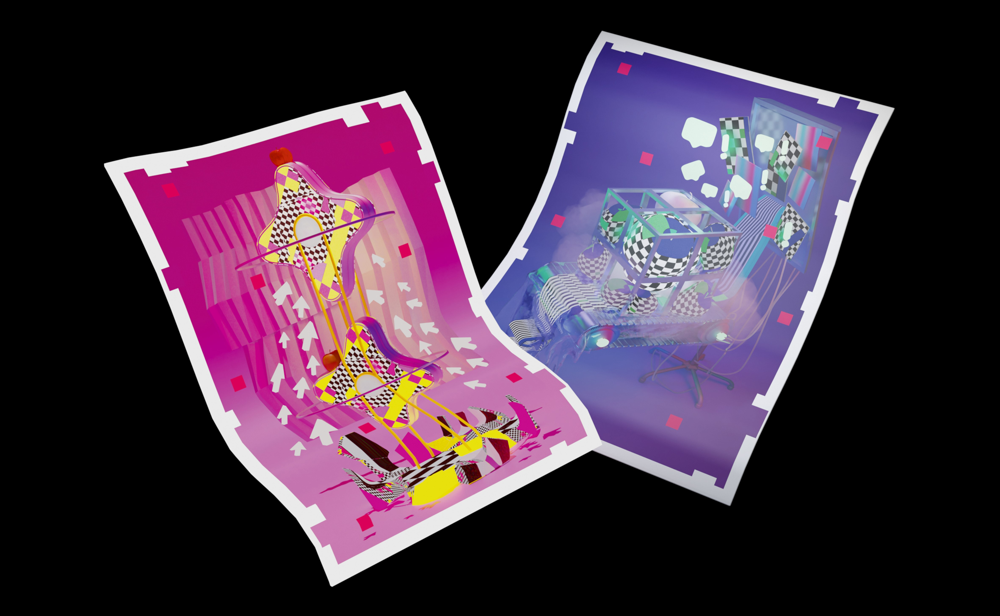
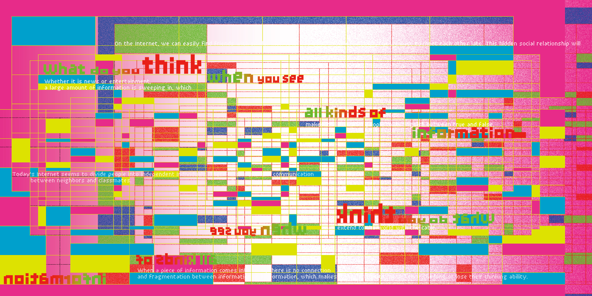
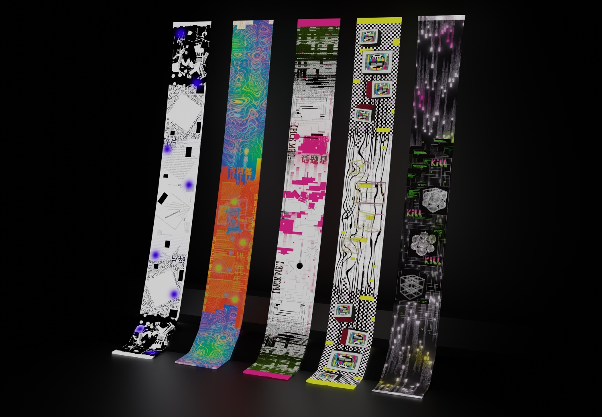
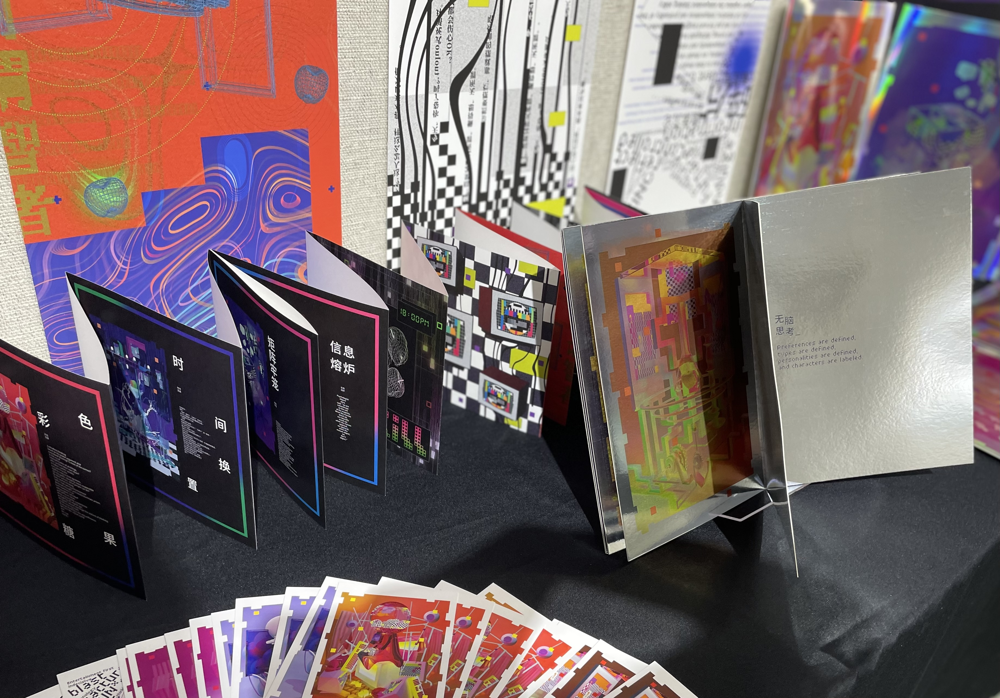
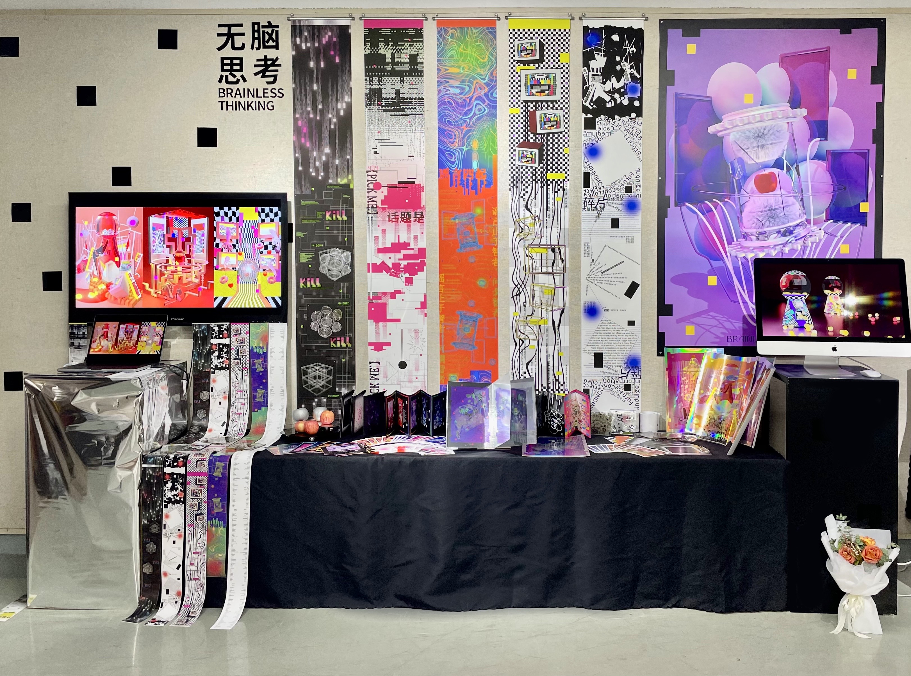

BRAINLESS
Brainless Thinking is my graduation design project that explores the loss of independent thought in today's hyper-digitalized society. Triggered by the pandemic and accelerated by social media culture, it reflects on how public opinion is increasingly shaped by algorithms, trending content, and the urge to conform — leading to passive consumption and a diluted sense of self.

Concept
In the era of endless scrolling and instant gratification, thinking has become outsourced. We "like," we share, we echo — but do we think? This project critiques how numerical authority (likes, shares, comments) and algorithmic curation reduce complex thought to simplified reactions. Using visual storytelling, it questions the illusion of freedom in digital spaces and asks: Are we forming opinions, or just following them?
Visual Language
The design combines abstract 3D modeling with glitch aesthetics to create a visually rich metaphor for cognitive overload. Symbolic elements like pixelated brains, melting gashapon capsules, and "wisdom fruits" wrapped in identical shells represent the collapse of individuality in a world driven by visibility. Tools like Blender, C4D, TouchDesigner, and Processing were used to simulate virtual spaces where chaos feels deceptively curated.


Book Design
This book, themed "Brainless Thinking", adopts a 20×20 cm square accordion-fold format, integrating text and visual elements to create a reading experience that balances concept and aesthetics. The cover features an abstract representation of a "fruit of wisdom," symbolically processed and Gaussian-blurred to form a red focal point of divergent thinking. The inner pages are printed on high-quality ultra-white specialty paper, with carefully arranged text and vibrant visuals to enhance the expression of information in a two-dimensional space. The accordion binding allows the book to fully unfold, with long strip pages spread across the center, enriching spatial layers and display dynamics—an interdisciplinary exploration of image, text, and book structure.

Exhibitions
The exhibits were showcased at the Sandao Art Museum of Xiamen University, featuring extended items such as postcards, pearlescent paper inserts, and long fabric scrolls, which enhanced interactivity and visual appeal. Additionally, the exhibition incorporated 3D effects combining virtual and real interactions. Materials like holographic laser paper, large-format posters, and ultra-fine synthetic fabrics were used to create rich light and shadow effects, delivering an immersive atmosphere with a grand and visually satisfying presentation.


Video
As the pace of modern life accelerates and "6-second short videos" become increasingly popular, the exhibition adopts the "golden 6 seconds" principle based on audience attention spans. It features three 6-second short video clips and a 2-minute long video, played in loops on different screens. By combining dynamic imagery with virtual-reality interaction and glitch-style music, the exhibition enhances immersion and visual impact, significantly elevating the overall presentation effect.
Sincere thanks to Professor Zhang Wenhua for her invaluable guidance on the project.